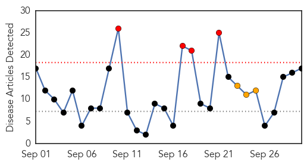
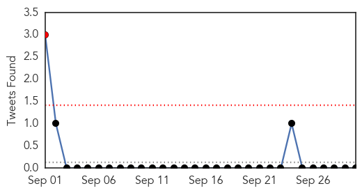
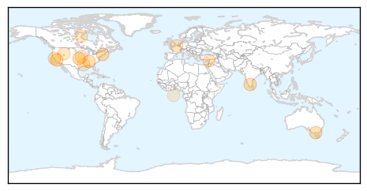
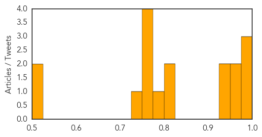

Toggle navigation
Early Warning
Daily Alerts
Influenza
Sep 30, 2015
Compare to:
-
Dengue Fever
Hemmorhagic Fever
Mold/Fungal Infection
Meningitis
Pertussis / Whooping Cough
Middle East Respiratory Syndrome
Cholera
Hepatitis
Chikungunya
Yellow Fever
Bubonic Plague
West Nile Virus
Swine Flu
Ebola
Measles
Unknown
Mumps
30 Day Trends
Web: 4
alerts
, 3
warnings
Twitter: 1
alerts
, 0
warnings
Top Articles:
0.997
Flu season begins, but experts say this year's vaccine should do the trick
0.992
WAFF-TV: News, Weather and Sports for Huntsville, AL
0.978
Get Your Flu Shot at the Norwalk Health Department
0.964
Controversies in medicine: the rise and fall of the challenge to Tamiflu
0.963
WSU News Washington State University
0.936
Free flu shots available in greater St. Louis community
0.929
165 hospitals under the scanner
0.813
Sleep fights off the common cold
0.810
Need your flu shot? Find a clinic here
0.785
Four-strain flu vaccine offers more protection
0.751
September 30, 2015 Archives
0.751
September 30, 2015 Archives
0.751
September 30, 2015 Archives
0.751
September 29, 2015 Archives
0.735
Avian Flu Scan for Sep 29, 2015
0.518
HCA standards for vaccine administration updated as role expands
0.507
USPOULTRY Seminar Highlights More Avian Flu Preparation Ideas
Top Tweets:
No tweets found for Sep 30, 2015
Web/News Articles

Tweets

Article Locations

Article Confidences
